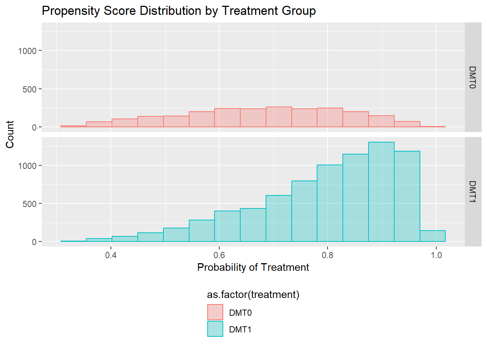
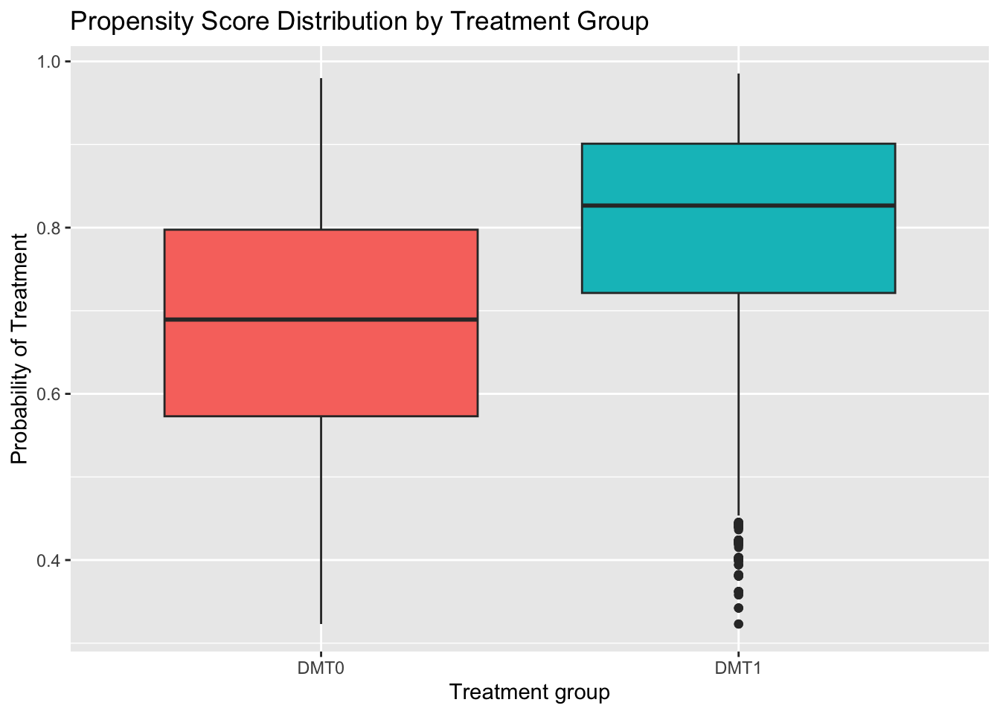
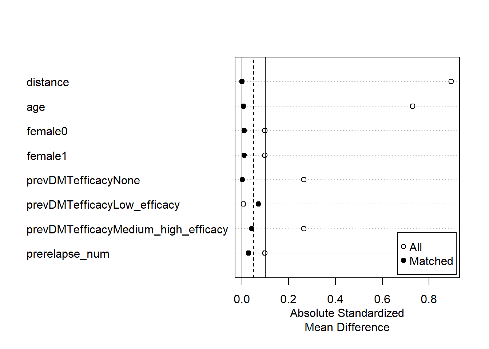
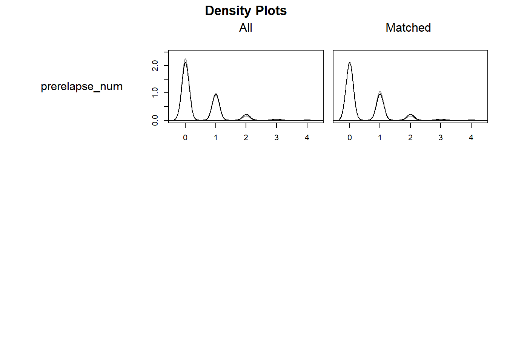

3Confounding adjustment using propensity score methods
Authors
Affiliations
Tammy Jiang
Biogen
Thomas Debray
Smart Data Analysis and Statistics B.V.
3.1 Introduction
The purpose of this document is to provide example R code that demonstrates how to estimate the propensity score and implement matching, stratification, weighting, and regression adjustment for the continuous propensity score. In this example using simulated data, we have two disease modifying therapies (DMT1 and DMT0) and the outcome is the number of post-treatment multiple sclerosis relapses during follow-up. We will estimate the average treatment effect in the treated (ATT) using propensity score matching, stratification, and weighting. We will estimate the average treatment effect in the population (ATE) using regression adjustment for the continuous propensity score. The treatment effects can be interpreted as annualized relapse rate ratios (ARR).
We consider an example dataset with the following characteristics:
DMT1 is the treatment group and DMT0 is the control group
prevDMTefficacy is previous DMT efficacy (none, low efficacy, and medium/high efficacy)
prerelapse_num is the number of previous MS relapses
DMT0
DMT1
n
2300
7700
age (mean (SD))
51.39 (8.32)
44.25 (9.79)
female = 1 (%)
1671 (72.65)
5915 (76.82)
prevDMTefficacy (%)
None
1247 (54.22)
3171 (41.18)
Low_efficacy
261 (11.35)
858 (11.14)
Medium_high_efficacy
792 (34.43)
3671 (47.68)
prerelapse_num (mean (SD))
0.39 (0.62)
0.46 (0.68)
3.3 Estimating the propensity score
3.3.1 Logistic regression
We sought to restore balance in the distribution of baseline covariates in patients treated with DMT1 (index treatment) and DMT0 (control tratment). We fit a multivariable logistic regression model in which treatment was regressed on baseline characteristics including age, sex, previous DMT efficacy, and previous number of relapses.
# Fit logistic regression modelps.model <-glm(treatment ~ age + female + prevDMTefficacy + prerelapse_num, data = dat, family =binomial())# Summary of logistic regression modelsummary(ps.model)
Call:
glm(formula = treatment ~ age + female + prevDMTefficacy + prerelapse_num,
family = binomial(), data = dat)
Deviance Residuals:
Min 1Q Median 3Q Max
-2.7949 0.2585 0.5220 0.7478 1.5033
Coefficients:
Estimate Std. Error z value Pr(>|z|)
(Intercept) 4.809473 0.157127 30.609 < 2e-16 ***
age -0.086708 0.002996 -28.939 < 2e-16 ***
female1 0.253611 0.057664 4.398 1.09e-05 ***
prevDMTefficacyLow_efficacy 0.310394 0.083022 3.739 0.000185 ***
prevDMTefficacyMedium_high_efficacy 0.660266 0.054393 12.139 < 2e-16 ***
prerelapse_num 0.156318 0.039288 3.979 6.93e-05 ***
---
Signif. codes: 0 '***' 0.001 '**' 0.01 '*' 0.05 '.' 0.1 ' ' 1
(Dispersion parameter for binomial family taken to be 1)
Null deviance: 10786 on 9999 degrees of freedom
Residual deviance: 9597 on 9994 degrees of freedom
AIC: 9609
Number of Fisher Scoring iterations: 5
# Extract propensity scoresdat$ps <-predict(ps.model, data = dat, type ="response")
3.3.2 Assessing overlap
We examined the degree of overlap in the distribution of propensity scores across treatment groups using histograms and side-by-side box plots.
# Histogramggplot(dat, aes(x = ps, fill =as.factor(treatment), color =as.factor(treatment))) +geom_histogram(alpha =0.3, position='identity', bins =15) +facet_grid(as.factor(treatment) ~ .) +xlab("Probability of Treatment") +ylab("Count") +ggtitle("Propensity Score Distribution by Treatment Group") +theme(legend.position ="bottom", legend.direction ="vertical")

# Side-by-side box plotsggplot(dat, aes(x=as.factor(treatment), y=ps, fill=as.factor(treatment))) +geom_boxplot() +ggtitle("Propensity Score Distribution by Treatment Group") +ylab("Probability of Treatment") +xlab("Treatment group") +theme(legend.position ="none")

# Distribution of propensity scores by treatment groupssummary(dat$ps[dat$treatment =="DMT1"])
Min. 1st Qu. Median Mean 3rd Qu. Max.
0.3230 0.7214 0.8265 0.7970 0.9010 0.9854
summary(dat$ps[dat$treatment =="DMT0"])
Min. 1st Qu. Median Mean 3rd Qu. Max.
0.3230 0.5730 0.6894 0.6795 0.7975 0.9799
3.4 Propensity score matching
3.4.1 1:1 Optimal full matching without replacement
library(MatchIt)# Use MatchIt package for PS matchingopt <-matchit(treatment ~ age + female + prevDMTefficacy + prerelapse_num, data = dat, method ="full",estimand ="ATT")opt
A matchit object
- method: Optimal full matching
- distance: Propensity score
- estimated with logistic regression
- number of obs.: 10000 (original), 10000 (matched)
- target estimand: ATT
- covariates: age, female, prevDMTefficacy, prerelapse_num
3.4.2 Assess balance after matching
summary(opt)
Call:
matchit(formula = treatment ~ age + female + prevDMTefficacy +
prerelapse_num, data = dat, method = "full", estimand = "ATT")
Summary of Balance for All Data:
Means Treated Means Control Std. Mean Diff.
distance 0.7970 0.6795 0.8943
age 44.2496 51.3883 -0.7289
female0 0.2318 0.2735 -0.0987
female1 0.7682 0.7265 0.0987
prevDMTefficacyNone 0.4118 0.5422 -0.2649
prevDMTefficacyLow_efficacy 0.1114 0.1135 -0.0065
prevDMTefficacyMedium_high_efficacy 0.4768 0.3443 0.2651
prerelapse_num 0.4595 0.3930 0.0976
Var. Ratio eCDF Mean eCDF Max
distance 0.7873 0.1917 0.3379
age 1.3868 0.1519 0.3085
female0 . 0.0417 0.0417
female1 . 0.0417 0.0417
prevDMTefficacyNone . 0.1304 0.1304
prevDMTefficacyLow_efficacy . 0.0020 0.0020
prevDMTefficacyMedium_high_efficacy . 0.1324 0.1324
prerelapse_num 1.1990 0.0133 0.0383
Summary of Balance for Matched Data:
Means Treated Means Control Std. Mean Diff.
distance 0.7970 0.7970 0.0001
age 44.2496 44.1364 0.0116
female0 0.2318 0.2517 -0.0470
female1 0.7682 0.7483 0.0470
prevDMTefficacyNone 0.4118 0.4157 -0.0079
prevDMTefficacyLow_efficacy 0.1114 0.1224 -0.0347
prevDMTefficacyMedium_high_efficacy 0.4768 0.4619 0.0297
prerelapse_num 0.4595 0.4654 -0.0087
Var. Ratio eCDF Mean eCDF Max
distance 0.9955 0.0012 0.0116
age 1.0161 0.0076 0.0260
female0 . 0.0199 0.0199
female1 . 0.0199 0.0199
prevDMTefficacyNone . 0.0039 0.0039
prevDMTefficacyLow_efficacy . 0.0109 0.0109
prevDMTefficacyMedium_high_efficacy . 0.0148 0.0148
prerelapse_num 0.9530 0.0057 0.0110
Std. Pair Dist.
distance 0.0022
age 0.1688
female0 0.5149
female1 0.5149
prevDMTefficacyNone 0.1816
prevDMTefficacyLow_efficacy 0.5944
prevDMTefficacyMedium_high_efficacy 0.4731
prerelapse_num 0.3893
Sample Sizes:
Control Treated
All 2300. 7700
Matched (ESS) 198.89 7700
Matched 2300. 7700
Unmatched 0. 0
Discarded 0. 0
plot(summary(opt))

# black line is treated group, grey line is control groupplot(opt, type ="density", which.xs = vars)

3.4.3 Estimating the ATT
We can estimate the ATT in the matched sample using Poisson regression in which the number of post-treatment relapses is regressed on treatment status and follow-up time for each patient (captured by the variable years). More details are provided at .
As indicated in the summary output above, the annualized relapse rate ratio for DMT1 vs DMT0 among patients treated with DMT0 (ATT) is given as 0.76 with a 95% confidence interval ranging from 0.56 to 0.96.
3.5 Propensity score stratification
3.5.1 Divide sample into quintiles of propensity scores
We will form five mutually exclusive groups of the estimated propensity score.
# Create five stratadat <- dat %>%mutate(ps.strata =cut(ps, breaks =c(quantile(ps, probs=seq(0,1,0.2))),labels =seq(1:5),include.lowest =TRUE))# Number of patients in each stratumtable(dat$ps.strata)
1 2 3 4 5
2002 2015 1991 1997 1995
3.5.2 Assess balance within each propensity score stratum
Within each propensity score stratum, treated and control patients should have similar values of the propensity score and the distribution of baseline covariates should be approximately balanced between treatment groups.
3.5.2.1 Propensity Score Stratum #1
tab1.strata1 <-CreateTableOne(vars, data = dat %>%filter(ps.strata ==1), factorVars =c("female", "prevDMTefficacy"), strata ="treatment", test =FALSE)tab1.strata1.print <-print(tab1.strata1, catDigits =2, contDigits =2, smd =TRUE)
DMT0
DMT1
SMD
n
901
1101
age (mean (SD))
58.38 (3.67)
57.45 (3.73)
0.251
female = 1 (%)
605 (67.15)
775 (70.39)
0.070
prevDMTefficacy (%)
0.056
None
650 (72.14)
771 (70.03)
Low_efficacy
106 (11.76)
130 (11.81)
Medium_high_efficacy
145 (16.09)
200 (18.17)
prerelapse_num (mean (SD))
0.29 (0.53)
0.33 (0.56)
0.074
3.5.2.2 Propensity Score Stratum #2
tab1.strata2 <-CreateTableOne(vars, data = dat %>%filter(ps.strata ==2), factorVars =c("female", "prevDMTefficacy"), strata ="treatment", test =FALSE)tab1.strata2.print <-print(tab1.strata2, catDigits =2, contDigits =2, smd =TRUE)
DMT0
DMT1
SMD
n
617
1398
age (mean (SD))
52.18 (4.35)
51.97 (4.22)
0.049
female = 1 (%)
458 (74.23)
1048 (74.96)
0.017
prevDMTefficacy (%)
0.054
None
292 (47.33)
624 (44.64)
Low_efficacy
69 (11.18)
162 (11.59)
Medium_high_efficacy
256 (41.49)
612 (43.78)
prerelapse_num (mean (SD))
0.40 (0.64)
0.41 (0.66)
0.004
3.5.2.3 Propensity Score Stratum #3
tab1.strata3 <-CreateTableOne(vars, data = dat %>%filter(ps.strata ==3), factorVars =c("female", "prevDMTefficacy"), strata ="treatment", test =FALSE)tab1.strata3.print <-print(tab1.strata3, catDigits =2, contDigits =2, smd =TRUE)
DMT0
DMT1
SMD
n
392
1599
age (mean (SD))
46.73 (4.06)
46.36 (4.08)
0.092
female = 1 (%)
305 (77.81)
1193 (74.61)
0.075
prevDMTefficacy (%)
0.041
None
168 (42.86)
687 (42.96)
Low_efficacy
52 (13.27)
191 (11.94)
Medium_high_efficacy
172 (43.88)
721 (45.09)
prerelapse_num (mean (SD))
0.49 (0.68)
0.47 (0.66)
0.031
3.5.2.4 Propensity Score Stratum #4
tab1.strata4 <-CreateTableOne(vars, data = dat %>%filter(ps.strata ==4), factorVars =c("female", "prevDMTefficacy"), strata ="treatment", test =FALSE)tab1.strata4.print <-print(tab1.strata4, catDigits =2, contDigits =2, smd =TRUE)
DMT0
DMT1
SMD
n
269
1728
age (mean (SD))
41.07 (4.11)
40.88 (4.29)
0.046
female = 1 (%)
203 (75.46)
1356 (78.47)
0.071
prevDMTefficacy (%)
0.084
None
105 (39.03)
634 (36.69)
Low_efficacy
22 ( 8.18)
181 (10.47)
Medium_high_efficacy
142 (52.79)
913 (52.84)
prerelapse_num (mean (SD))
0.50 (0.69)
0.51 (0.71)
0.012
3.5.2.5 Propensity Score Stratum #5
tab1.strata5 <-CreateTableOne(vars, data = dat %>%filter(ps.strata ==5), factorVars =c("female", "prevDMTefficacy"), strata ="treatment", test =FALSE)tab1.strata5.print <-print(tab1.strata5, catDigits =2, contDigits =2, smd =TRUE)
DMT0
DMT1
SMD
n
121
1874
age (mean (SD))
33.26 (4.95)
32.04 (5.58)
0.233
female = 1 (%)
100 (82.64)
1543 (82.34)
0.008
prevDMTefficacy (%)
0.050
None
32 (26.45)
455 (24.28)
Low_efficacy
12 ( 9.92)
194 (10.35)
Medium_high_efficacy
77 (63.64)
1225 (65.37)
prerelapse_num (mean (SD))
0.52 (0.66)
0.52 (0.73)
0.004
3.5.3 Estimating and pooling of stratum-specific treatment effects
The overall ATT across strata can be estimated by weighting stratum-specific estimates by the proportion of treated patients in each stratum over all treated patients in the sample.
We first define a function att.strata.function() to calculate stratum-specific estimates of the treatment effect:
att.strata.function <-function(data, stratum, confint =TRUE) { fit <-glm("y ~ treatment + offset(log(years))",family =poisson(link ="log"),data = data %>%filter(ps.strata == stratum)) arr <-round(as.numeric(exp(coef(fit)["treatmentDMT1"])), digits =3) ll <- ul <-NAif (confint) { ll <-round(exp(confint(fit))["treatmentDMT1",1], digits =3) ul <-round(exp(confint(fit))["treatmentDMT1",2], digits =3) }return(c("stratum"= stratum,"arr"= arr,"ci_lower"= ll,"ci_upper"= ul))}arr.strata <-as.data.frame(t(sapply(1:5, att.strata.function, data = dat)))arr.strata
Subsequently, we define a function weights.strata.function() to calculate the weights for each stratum. The weight is the proportion of treated patients in each stratum over all treated patients in the sample:
# Create table with ARRs and weights for each PS stratumarr.weights.merged <-merge(arr.strata, weights.strata, by ="stratum")# Calculate the weighted ARR for each stratumarr.weights.merged <- arr.weights.merged %>%mutate(weighted.arr =as.numeric(arr) * weight)# Sum the weighted ARRs across strata to get the overall ATTsum(arr.weights.merged$weighted.arr)
[1] 0.7482462
We now define a new function ps.stratification.bootstrap() that integrates estimation of the ATT and the PS weights for bootstrapping purposes:
Propensity score weighting reweights the study sample to generate an artificial population (i.e., pseudo-population) in which the covariates are no longer associated with treatment, thereby removing confounding by measured covariates. For the ATT, the weight for all treated patients is set to one. Conversely, the weight for patients in the control group is set to the propensity score divided by one minus the propensity score, that is, (PS/(1 − PS)). We estimated stabilized weights to address extreme weights.
Balance Measures
Type Diff.Adj M.Threshold
prop.score Distance -0.0045 Balanced, <0.05
age Contin. 0.0054 Balanced, <0.05
female Binary 0.0005 Balanced, <0.05
prevDMTefficacy_None Binary -0.0003 Balanced, <0.05
prevDMTefficacy_Low_efficacy Binary 0.0023 Balanced, <0.05
prevDMTefficacy_Medium_high_efficacy Binary -0.0020 Balanced, <0.05
prerelapse_num Contin. -0.0034 Balanced, <0.05
V.Ratio.Adj
prop.score 0.9926
age 1.0102
female .
prevDMTefficacy_None .
prevDMTefficacy_Low_efficacy .
prevDMTefficacy_Medium_high_efficacy .
prerelapse_num 1.0941
Balance tally for mean differences
count
Balanced, <0.05 7
Not Balanced, >0.05 0
Variable with the greatest mean difference
Variable Diff.Adj M.Threshold
age 0.0054 Balanced, <0.05
Effective sample sizes
DMT0 DMT1
Unadjusted 2300. 7700
Adjusted 1043.16 7700
3.6.3 Estimate the ATT
One way to estimate the ATT is to use the survey package. The function svyglm() generates model-robust (Horvitz-Thompson-type) standard errors by default, and thus does not require additional adjustments.
As indicated above, propensity score weighting yielded an ATT estimate of 0.71 (95% CI: 0.66; 0.76).
An alternative approach is to use glm() to estimate the treatment effect and calculate robust standard errors.
# Alternative way to estimate treatment effectweighted.fit2 <-glm(y ~ treatment +offset(log(years)),family =poisson(link ="log"),data = dat,weights = w.out$weights)# Extract the estimated ARRexp(coef(weighted.fit2))["treatmentDMT1"]
treatmentDMT1
0.7083381
# Calculate robust standard error and p-value of the log ARRcoeftest(weighted.fit2, vcov. = vcovHC)["treatmentDMT1",]
Estimate Std. Error z value Pr(>|z|)
-3.448337e-01 6.442745e-02 -5.352280e+00 8.685284e-08
# Derive 95% confidence interval of the ARRexp(lmtest::coefci(weighted.fit2, level =0.95, # 95% confidence intervalvcov. = vcovHC)["treatmentDMT1",])
2.5 % 97.5 %
0.6243094 0.8036767
Using this approach, the ATT estimate was 0.71 (95% CI: 0.62; 0.8).
3.7 Regression adjustment for the propensity score for the ATE
In this approach, a regression model is fitted to describe the observed outcome as a function of the received treatment and the estimated propensity score:
Call:
glm(formula = y ~ treatment + ps + offset(log(years)), family = poisson(link = "log"),
data = dat)
Deviance Residuals:
Min 1Q Median 3Q Max
-2.0160 -0.7336 -0.4441 -0.1352 4.2634
Coefficients:
Estimate Std. Error z value Pr(>|z|)
(Intercept) -1.99585 0.10359 -19.266 < 2e-16 ***
treatmentDMT1 -0.25598 0.04431 -5.777 7.60e-09 ***
ps 1.07521 0.13878 7.748 9.36e-15 ***
---
Signif. codes: 0 '***' 0.001 '**' 0.01 '*' 0.05 '.' 0.1 ' ' 1
(Dispersion parameter for poisson family taken to be 1)
Null deviance: 7514.7 on 9999 degrees of freedom
Residual deviance: 7443.0 on 9997 degrees of freedom
AIC: 12378
Number of Fisher Scoring iterations: 6
# ATEexp(coef(ps.reg.fit))["treatmentDMT1"]
treatmentDMT1
0.7741606
Waiting for profiling to be done...
Waiting for profiling to be done...
Bootstrapped confidence intervals can be obtained as follows:
# Function to bootstrap for 95% CIsps.reg.bootstrap <-function(data, inds) { d <- data[inds,] fit <-glm(y ~ treatment + ps +offset(log(years)),family =poisson(link ="log"),data = d)return(exp(coef(fit))["treatmentDMT1"])}set.seed(1854)# Generate 1000 bootstrap replicatesarr.boot <-boot(dat, statistic = ps.reg.bootstrap, R =1000) # Extract the median annualized relapse rate across 1000 bootstrap replicatesmedian(arr.boot$t)
[1] 0.7750426
# Take 2.5th and 97.5th percentiles to be 95% CIquantile(arr.boot$t[,1], c(0.025, 0.975))
![]()